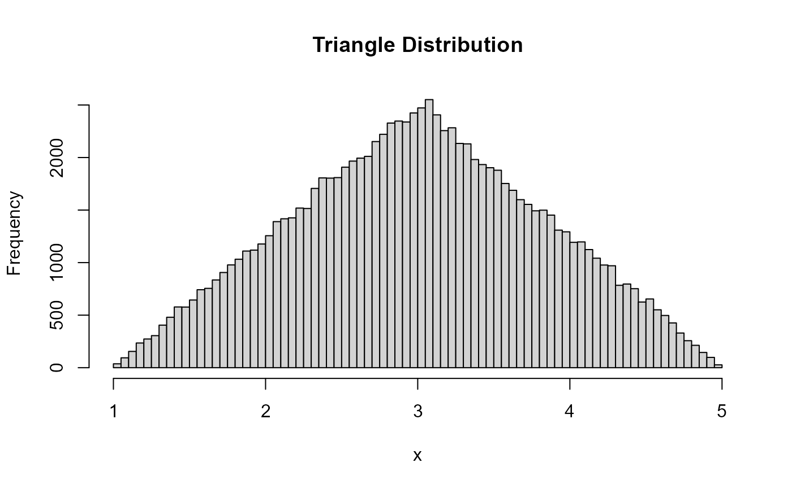

The Triangle Distribution
Source:R/dtriangle.R, R/ptriangle.r, R/qtriangle.R, and 1 more
triangle.RdThese functions provide information about the triangle
distribution on the interval from a to b with a maximum at
c. dtriangle gives the density, ptriangle gives the
distribution function, qtriangle gives the quantile function, and
rtriangle generates n random deviates.
Usage
dtriangle(x, a = 0, b = 1, c = (a + b)/2)
ptriangle(q, a = 0, b = 1, c = (a + b)/2)
qtriangle(p, a = 0, b = 1, c = (a + b)/2)
rtriangle(n = 1, a = 0, b = 1, c = (a + b)/2)Value
dtriangle gives the density, ptriangle gives the
distribution function, qtriangle gives the quantile function, and
rtriangle generates random deviates. Invalid arguments will result
in return value NaN or NA.
Details
All probabilities are lower tailed probabilities.
a, b, and c may be appropriate length vectors except in
the case of rtriangle. rtriangle is derived from a draw from
runif. The triangle distribution has density:
$$f(x) = \frac{2(x-a)}{(b-a)(c-a)}$$
for \(a \le x < c\).
$$f(x) = \frac{2(b-x)}{(b-a)(b-c)}$$
for \(c \le x \le b\).
\(f(x) = 0\) elsewhere.
The mean and variance are:
$$E(x) = \frac{(a + b + c)}{3}$$
$$V(x) = \frac{1}{18}(a^2 + b^2 + c^2 - ab - ac - bc)$$
References
Becker, R. A., Chambers, J. M. and Wilks, A. R. (1988) The New S Language. Wadsworth & Brooks/Cole.
See also
.Random.seed about random number generation,
runif, etc for other distributions.
Examples
## view the distribution
tri <- rtriangle(100000, 1, 5, 3)
hist(tri, breaks=100, main="Triangle Distribution", xlab="x")

mean(tri) # 1/3*(1 + 5 + 3) = 3
#> [1] 3.002157
var(tri) # 1/18*(1^2 + 3^2 + 5^2 - 1*5 - 1*3 - 5*3) = 0.666667
#> [1] 0.6680518
dtriangle(0.5, 0, 1, 0.5) # 2/(b-a) = 2
#> [1] 2
qtriangle(ptriangle(0.7)) # 0.7
#> [1] 0.7